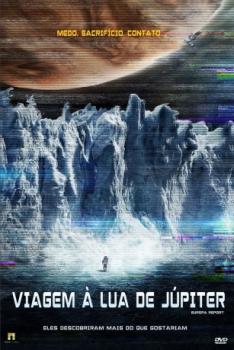

Viagem à Lua de Júpiter (2013)


Medo. Sacrifício. Contato.

Avaliação (IMDb):


6.4/10 (74.9K votos)
Avaliação (Usuário):
Outro Título:Europa Report
País:United States, 90 minutos
Idiomas falados:Inglês, Português
Gênero(s):Sci-Fi, Suspense
Diretor(s):Sebastián Cordero
Codec:MPEG-2 (DVD)
Número: 5468
Sinopse:
Um grupo de astronautas viaja até Europa, uma das luas de Júpiter, em busca de sinais de vida. Chegando ao local, uma série de incidentes levam-nos a perder contato com a Terra, devendo sobreviver sozinhos e num ambiente hostil.
Elenco:
Anamaria Marinca, Michael Nyqvist, Sharlto Copley, Daniel Wu, Karolina Wydra, Christian Camargo, Embeth Davidtz, Dan Fogler, Isiah Whitlock Jr.
Tipo de mídia: DVD R/RW,
Legendas: Inglês, Português, Sem Legendas
Alugado: Não
Tela: Anamorphic Widescreen